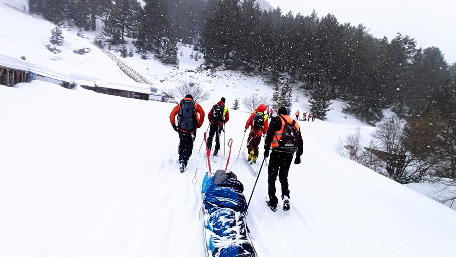

Панти, шейни, усмивки — Пирин ’25
Зимата в три планини
Витоша - Рила - Пирин
Тази година си поставихме амбициозната цел, залагайки на думите, че "Всички хубави неща са три".
Нека направим още едно незабравимо преживяване за нашите трима трудноподвижни участника.
След успешното достигане на Черни връх и две седмици по-късно до х. Рилски езера в т.доста тежки смесени условия, дойде време да се потопим и в приказния Пирин.
Нека и този път се опитаме да стигнем до х. Вихрен. Огромното ни желание да "впрегнем" в шейните и изпратим зимата с една живописна разходка за нашите приятели до х. Вихрен, може да не може да се осъществи.
Но имаме опита с придвижване в смесени условия, който ще ни помогне и този път
Имаме нужда от подкрепата на 24-ма доброволци за 3 шейни или колички – в зависимост от конкретните условия.
Ако искаш да бъдеш част от едно незабравимо преживяване и разЛично усещане за планина, то бързо се запиши.
Тръгваме от Шилигарника до х. Вихрен.
Избрахме 6 април, денят след Приятелската среща по ски-алпинизъм #ПРОЙКАТА , която се провежда всяка първа събота на м. април. Така ще може хората, които биха участвали в #Пройката, да останат в Банско и да се включат в неделята след състезанието в нашето събитие.
И така – заповядайте! Любители на ски-туринга, планинари, хора с големи сърца!
Запазете датата, елате с чудесното си настроение, доведете деца и кучета... Добре дошли са както скиори, така и хора със снегоходки или просто – по обувки.
Нека заедно направим отново невъзможното възможно и се потопим в прегръдката на красивия Пирин.
За подробности следете страницата на ЕЛА и Ти.
Събитията ни са безплатни и разчитаме на подкрепа
Ако харесвате това, което правим и искате да продължим, ще сме благодарни на Вашата подкрепа
Фондация „Ела и ти“, ЕИК 177135613
Други издания
- 8 март 2026 — Панти, шейни, усмивки — Рилски езера ’26
- 1 март 2026 — Панти, шейни, усмивки ’26
- 16 март 2025 — Панти, шейни, усмивки — Рилски езера ’25
- 22 февруари 2025 — Панти, шейни, усмивки ’25
- 23 март 2024 — Панти, шейни, усмивки на Рилските езера ’24
- 9 март 2024 — Панти, шейни, усмивки ’24 – Черни връх
- 18 март 2023 — Панти, шейни, усмивки ’23
- 3 април 2022 — Панти, шейни, усмивки — Пирин
- 12 март 2022 — Панти, шейни, усмивки ’22
- 20 март 2021 — Панти, шейни, усмивки
